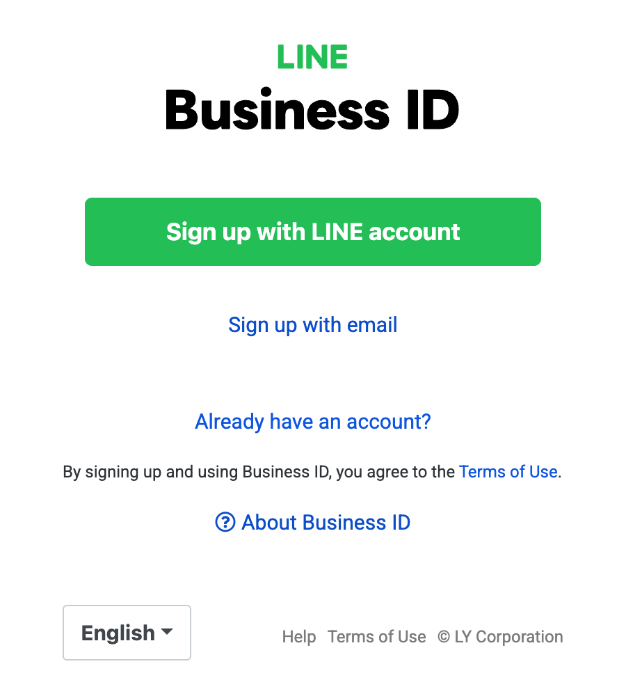
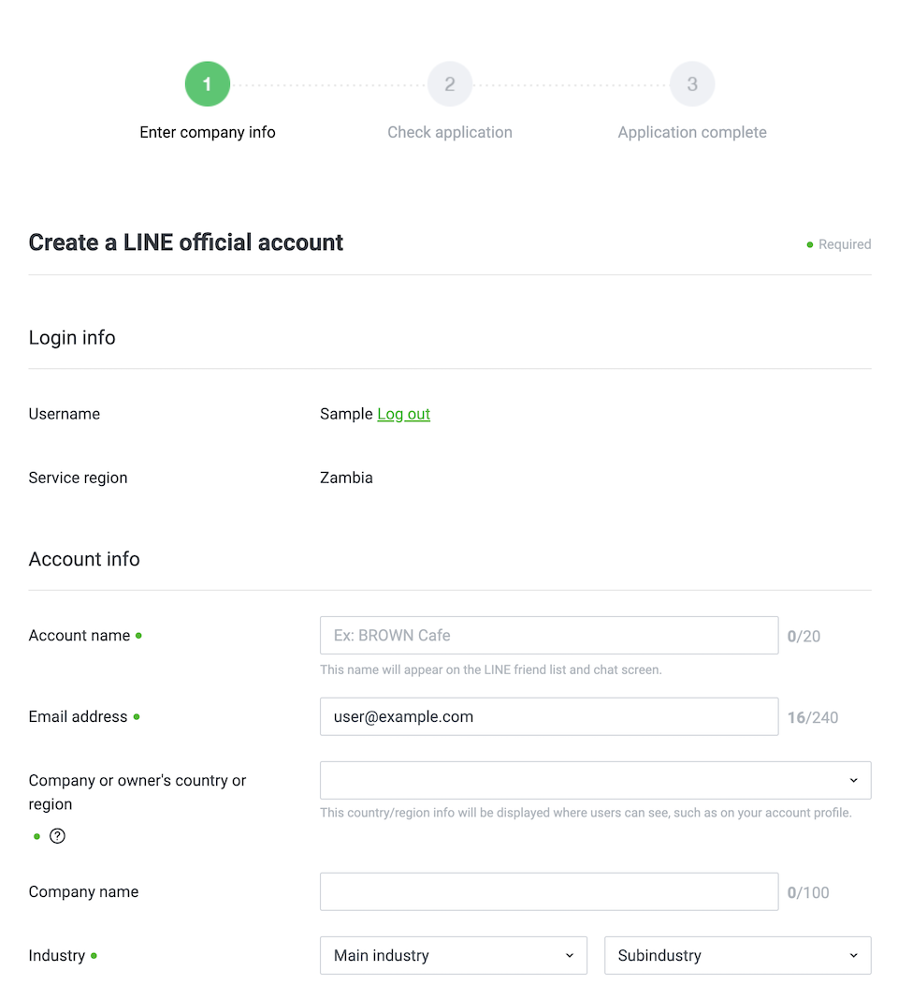
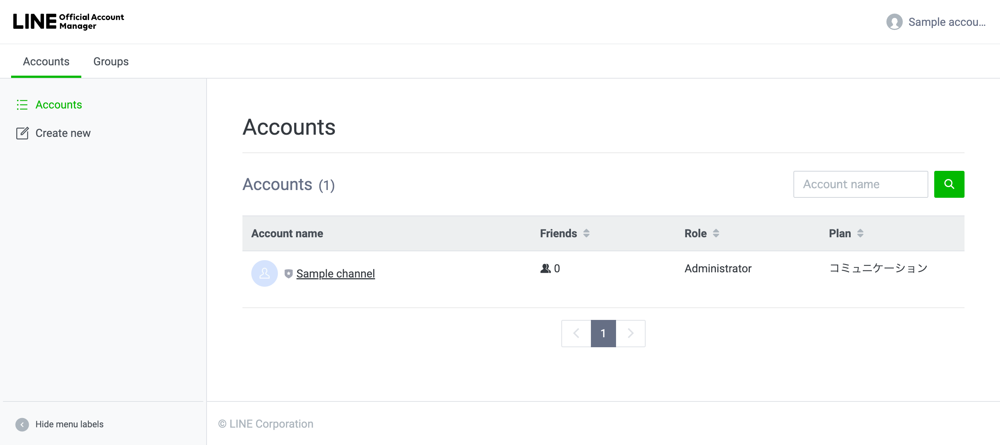
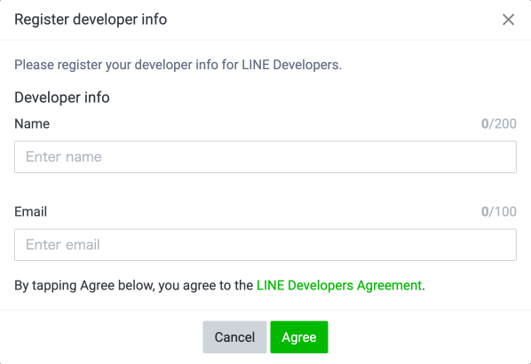
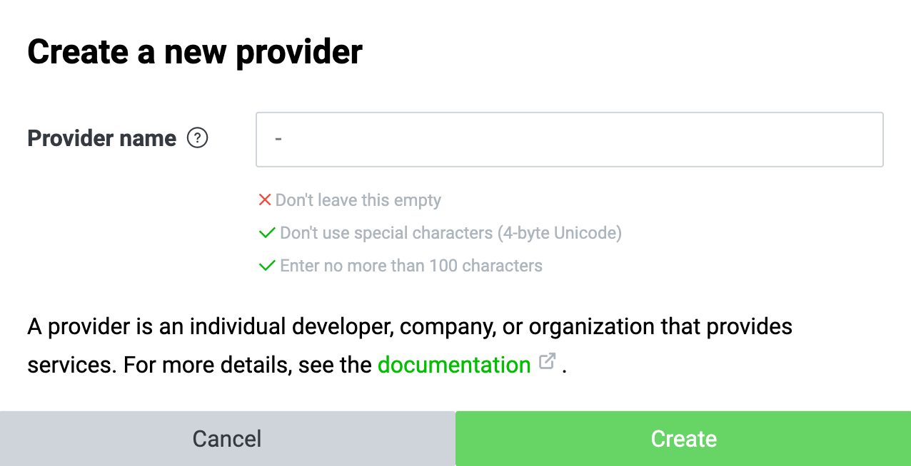
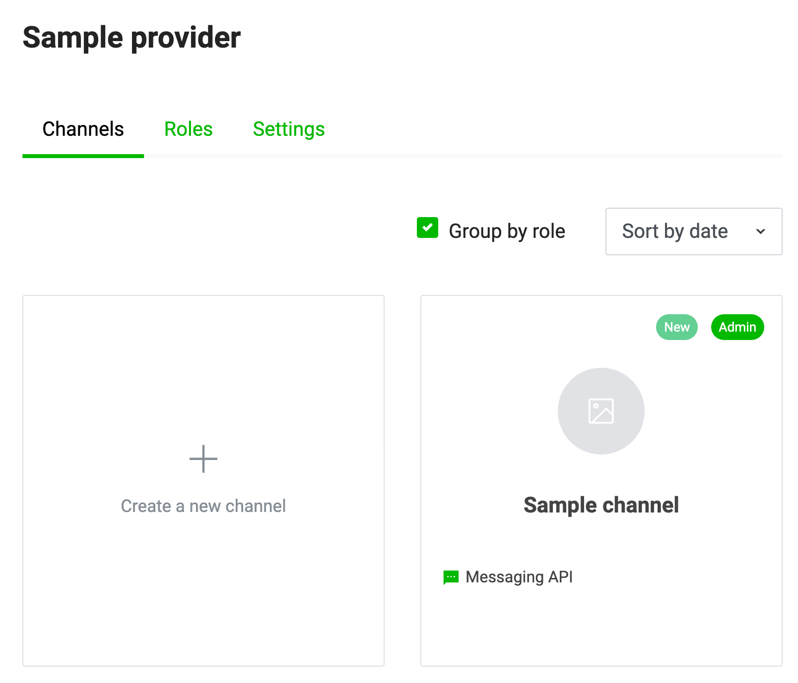
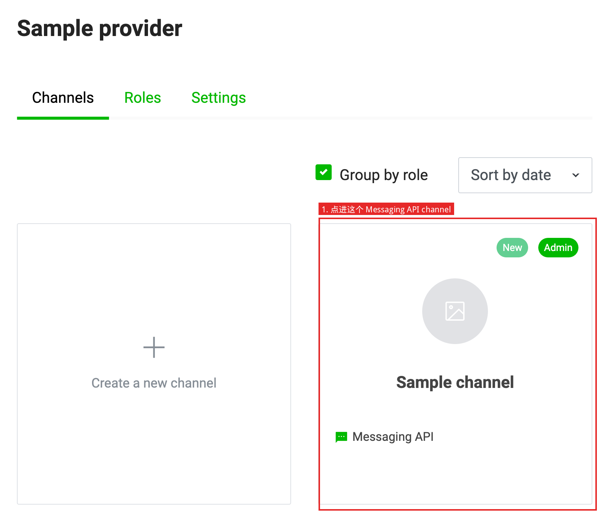
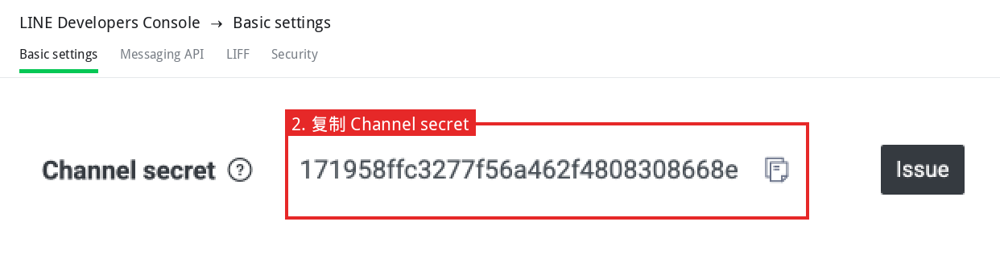
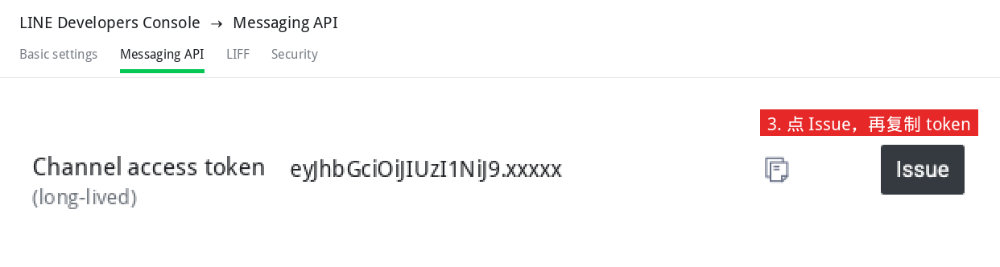
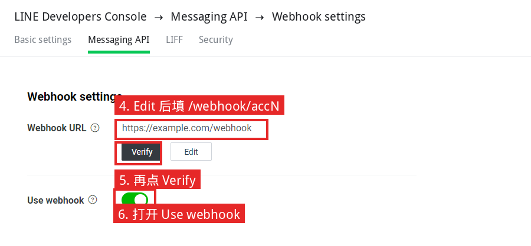

LINE 后台操作说明
按 LINE 官方文档整理。原文：
Get started with the Messaging API、
Build a bot、
Channel access token。
下面截图都是官方文档原图，没有改过。
你要拿到的两样密钥
每个官方账号启用 Messaging API 后，会在 LINE Developers Console 里出现一个 channel。进这个 channel 拿密钥：
| 密钥 | 去哪拿 | 干什么 |
|---|
| Channel secret |
LINE Developers Console → 选 Provider → 点进该账号的 Messaging API channel → 顶部 Basic settings 标签 → 找到 Channel secret → 复制 |
校验 LINE 发来的 webhook 是不是真的（签名） |
| Channel access token |
同一个 channel → 顶部 Messaging API 标签 → 拉到 Channel access token (long-lived) → 点 Issue → 复制
官方说明：长期 token 只在 Messaging API channel 的 Messaging API 标签页签发。原文 |
调用 Messaging API 发消息 |
5 个账号就进 5 个 channel，各复制一套。官方文档没有这两页的截图，按上面的标签名找即可。
注意（官方原文）：重新签发长期 token 会让当前正在用的长期 token 失效。
你要改的设置
还是在同一个 channel 的 Messaging API 标签页。官方步骤如下（Set a webhook URL）：
- 登录 LINE Developers Console，点开该 channel 所属的 Provider。
- 点进 Messaging API channel。
- 点 Messaging API 标签。
- 在 Webhook URL 点 Edit，填入地址，点 Update。必须是 HTTPS，且证书由浏览器普遍信任的 CA 签发，自签证书不行。
- 点 Verify。通过会显示 Success。
- 打开 Use webhook。
5 个账号各填各的地址，例如：
账号 1：https://你的域名/webhook/acc1
账号 2：https://你的域名/webhook/acc2
账号 3：https://你的域名/webhook/acc3
账号 4：https://你的域名/webhook/acc4
账号 5：https://你的域名/webhook/acc5
同一页建议把 Greeting messages、Auto-reply messages 设为 Disabled。官方说明：默认是 Enabled，会和 Messaging API 的回复叠在一起，分不清是谁回的。原文
1. 创建 LINE 官方账号
官方：Create a LINE Official Account
- 先注册 Business ID（可用 LINE 账号或邮箱）。
- 填写官方账号申请表。
- 到 LINE Official Account Manager 确认账号已建好。

官方图：注册 Business ID。

官方图：填写官方账号申请表。

官方图：Official Account Manager 的账号列表。左侧 Create new 可再建号。
2. 为官方账号启用 Messaging API
官方：Enable the Messaging API
在 Official Account Manager 里为该账号启用 Messaging API 后，才会自动生成 Messaging API channel。不能再从 Developers Console 直接新建 Messaging API channel。
- 在 Official Account Manager 打开该账号，启用 Messaging API。
- 若该登录账号从没进过 Developers Console，会先让你填开发者姓名和邮箱。
- 选择管理这个官方账号的 Provider。5 个号请选同一个。官方警告：Provider 一旦指定不能更换；不同 Provider 下同一用户的 userId 不同。
- 用同一账号登录 LINE Developers Console。
- 点开刚才选的 Provider，确认已经出现 Messaging API channel。

官方图：第一次进 Console 时的开发者登记。

官方图：没有 Provider 时新建一个。

官方图：Provider 下的 channel 列表。点进带 Messaging API 的那张卡片。
3. 在 Console 里拿密钥、填 Webhook
官方：Settings on LINE Developers Console
拿 Channel secret
- 点进该账号的 Messaging API channel。
- 打开 Basic settings。
- 复制 Channel secret。同页还有 Channel ID，可记下来对账。

官方原图：Provider 的 channel 列表。点进带 Messaging API 的卡片。

官方原图：Get Channel Secret。Basic settings 里复制这一行。同页还有 Channel ID。
拿 Channel access token
- 打开 Messaging API 标签。
- 找到 Channel access token (long-lived)，点 Issue，复制生成的 token。
- 同一页有官方账号 QR code，扫码加好友方便自测。

官方文档没有 token 这一行的截图。这一张用官方 Channel secret 同一套控件（Issue / 复制图标是官方原图像素），标签改成 Channel access token (long-lived)。点 Issue 后再复制。重新 Issue 会作废旧 token。
填 Webhook（官方 6 步）
- 仍在 Messaging API 标签。
- Webhook URL 点 Edit，填
https://你的域名/webhook/accN，点 Update。
- 点 Verify，看到 Success。
- 打开 Use webhook。

官方原图：Set a webhook URL。先 Edit 填地址，再 Verify，最后打开 Use webhook。
5 个账号怎么做
上面整套对每个官方账号各做一遍。只有 Webhook URL 的最后一段不同（acc1 … acc5），两套密钥不要贴串。